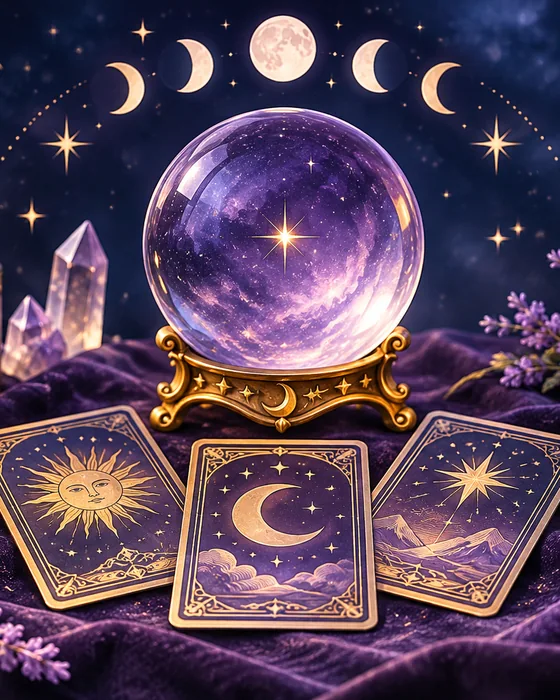
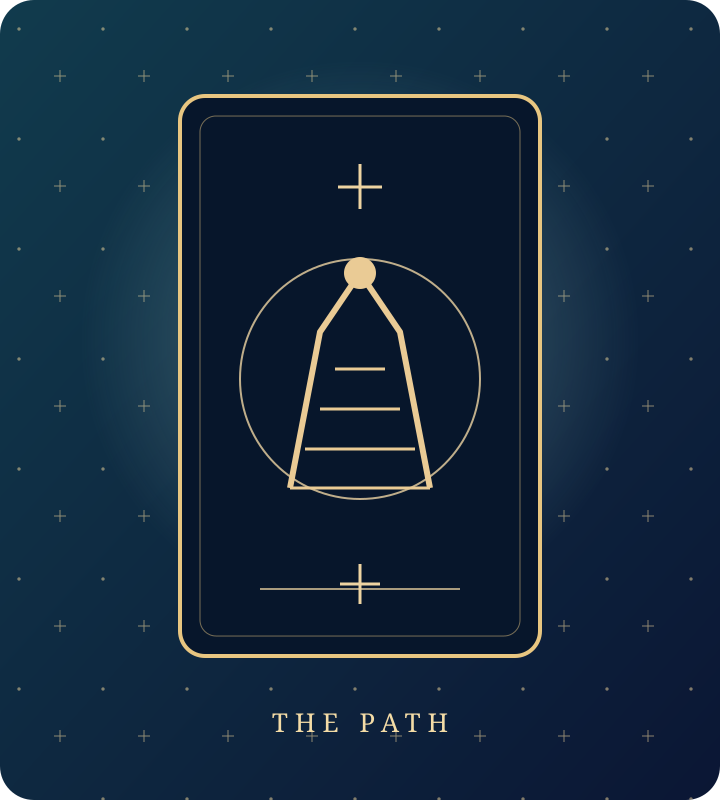

About Tarotell.me
Built for curious minds: a thoughtful meeting point between traditional tarot symbolism and accessible, question-led AI interpretation.
✦ Tarot as a tool for perspective—not a guarantee of future outcomes.


Tarotell.me is an online tarot platform created for people who want a simple, personal way to explore questions about love, relationships, career, money, personal growth, and everyday life.
We combine traditional tarot card meanings with AI-powered interpretation to make tarot readings easier to access, easier to understand, and more relevant to the question you are asking.
Our aim is not to tell you exactly what will happen next. Tarot is most useful when it gives you another way to think about what is already happening in your life.
A card can highlight a feeling, pattern, concern, possibility, or point of view that you may not have considered before. Tarotell.me is designed to support that moment of reflection.
Whether you are completely new to tarot or already familiar with the Major Arcana, Minor Arcana, tarot spreads, upright cards, reversed cards, and traditional symbolism, you can use Tarotell.me to explore your questions at your own pace.
Our Purpose
Many people come to tarot when they feel uncertain.
You may be wondering where a relationship is heading. You may be considering a new job, thinking about a financial decision, or trying to understand why a situation keeps affecting you.
Sometimes you are not looking for a prediction. You simply want another perspective.
That is the purpose behind Tarotell.me.
We want to give people a convenient space where they can ask meaningful questions, select tarot cards, receive a personalized interpretation, and consider what those cards may represent in the context of their lives.
Our platform is built around curiosity, self-reflection, personal insight, and thoughtful decision-making.
Tarot Made Easier to Explore
Traditional tarot contains a large system of symbols, card meanings, suits, archetypes, relationships, and spread positions.
For someone beginning with tarot, that can feel like a lot to learn.
Tarotell.me makes that experience more approachable.
Instead of requiring you to memorize dozens of tarot card meanings before you can begin, our platform helps connect the cards you select with the question you ask.
You can explore a single card, use a broader tarot spread, or select a reading focused on a particular part of your life.
Popular reading types include:
- One-card tarot readings
- Daily tarot cards
- Love tarot readings
- Relationship tarot readings
- Career tarot readings
- Money tarot readings
- Yes-or-no tarot readings
- Question-based tarot readings
- Personalized tarot spreads
Each reading provides a different way to reflect on your situation.
How We Use AI in Tarot Readings
Tarotell.me uses artificial intelligence to help interpret tarot cards in context.
A traditional tarot card can carry several possible meanings. Its interpretation may change depending on the question, card position, surrounding cards, reading type, and the situation being explored.
AI allows Tarotell.me to consider more of that context when presenting a reading.
Rather than showing only a short, generic definition for a card, the platform can connect traditional card symbolism with the topic you are asking about.
For example, the meaning of The Lovers may be discussed differently in a relationship reading than in a career reading. A card from the suit of Pentacles may take on a different focus when the question involves finances, work, security, or long-term priorities.
The technology supports the interpretation, but the reading remains yours to consider.
You decide what feels meaningful, what does not apply, and what actions you want to take afterward.

Respecting the Tradition of Tarot
Our online format may be modern, but the tarot system itself has a long history of symbolic interpretation.
Tarotell.me draws from familiar tarot structures such as the Major Arcana and Minor Arcana.
The Major Arcana includes cards such as The Fool, The Magician, The High Priestess, The Empress, The Lovers, The Chariot, Strength, The Hermit, Justice, The Star, The Moon, The Sun, and The World.
The Minor Arcana contains the suits of Cups, Wands, Swords, and Pentacles.
Each suit is commonly connected with different areas of experience.
Cups may relate to emotions and relationships. Wands may point toward action, creativity, and motivation. Swords often relate to thoughts, communication, choices, or tension. Pentacles frequently connect with work, money, stability, resources, and practical concerns.
Our goal is to make these symbols easier to explore without stripping away the depth that makes tarot interesting.

A Space for Personal Reflection
People use tarot in different ways.
Some use it as part of a spiritual practice.
Others see tarot as a self-reflection tool.
Some enjoy learning the symbolism of the cards, while others simply want a fresh perspective on a question.
Tarotell.me welcomes those different approaches.
You do not need to follow a particular spiritual belief to use the platform.
You can approach a reading with curiosity, intuition, mindfulness, or simple interest.
What matters is the question you bring to the cards and the thoughts the reading encourages you to explore.
Designed for Everyday Questions
Not every tarot reading needs to address a major life event.
Sometimes the most useful questions are simple.
What should I pay attention to today?
What might I be overlooking in this situation?
What is affecting how I feel about this relationship?
What should I think about before making this choice?
A daily one-card reading can give you a moment to stop and reflect. A relationship spread can help you think about communication and emotional patterns. A career reading can help you examine your priorities, concerns, and possible direction.
Tarotell.me is designed to make these moments easy to access whenever you want them.
Our Approach to Responsible Tarot
We believe tarot should support reflection rather than replace judgment.
A tarot reading should not be treated as guaranteed knowledge of future events.
It should also not replace professional medical, legal, financial, mental health, employment, or other qualified advice.
When you use Tarotell.me, we encourage you to treat your reading as one perspective among many.
Use the cards to ask questions, examine your thoughts, and notice patterns.
For important decisions, consider the facts, your circumstances, trusted people, and qualified professional advice where appropriate.
You remain responsible for your own choices.
That is an important part of how we approach tarot.
Why People Choose Tarotell.me
Tarotell.me is built around accessibility and personalization.
You can ask your own question rather than being limited to a fixed interpretation.
You can choose the reading type that matches what you want to explore.
You can receive a tarot interpretation without needing years of experience reading cards.
You can return for a daily card, explore a relationship question, think about a career choice, or simply learn more about tarot card meanings.
Most importantly, you can use the platform in the way that makes sense to you.
Our Vision
We want Tarotell.me to become a trusted place for people who are curious about tarot and want an accessible way to use it for reflection.
As the platform grows, our focus remains on making online tarot readings personal, understandable, useful, and easy to explore.
Tarot has always invited people to look at familiar situations from a different angle.
Technology gives us a new way to support that experience.
Tarotell.me brings the two together.
Your question begins the reading.
The cards offer symbols and themes.
The interpretation gives you something to consider.
What you do with that perspective is entirely up to you.
Explore Tarotell.me and start your next free tarot reading whenever you are ready.